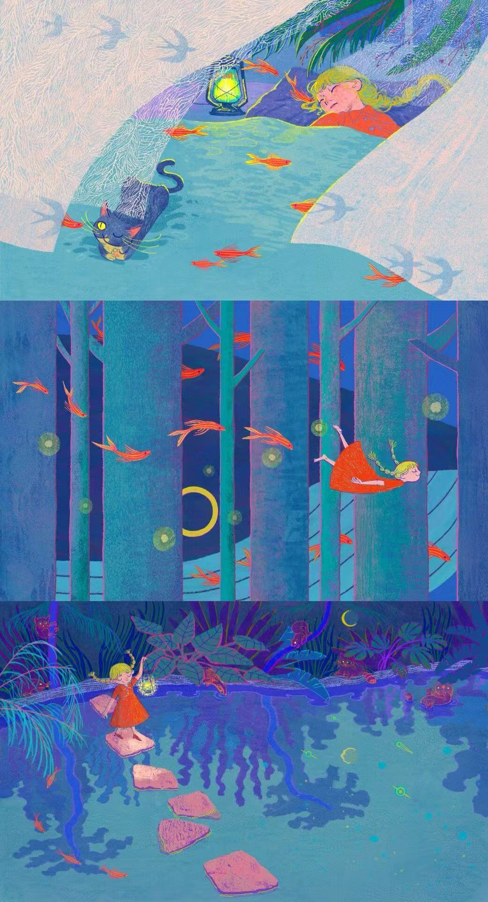

每日精选诗歌：
1. 古典诗词（唐诗）
《静夜思》· 李白
床前明月光，疑是地上霜。 举头望明月，低头思故乡。
类型：五言绝句 / 思乡诗
推荐理由：语言简练，意境深远，是华人文化圈传诵最广的诗歌之一。
2. 现代诗歌
《断章》· 卞之琳
你站在桥上看风景， 看风景的人在楼上看你。 明月装饰了你的窗子， 你装饰了别人的梦。
类型：哲理小诗 / 意象派
推荐理由：短短四句揭示主客体关系的转换，充满哲学韵味。
3. 外国诗歌（翻译作品）
《未选择的路》· 罗伯特·弗罗斯特（美国）
黄色的树林里分出两条路， 可惜我不能同时去涉足， 而我选择了人迹更少的一条，
从此决定了我一生的道路。
类型：象征主义 / 人生抉择
推荐理由：用自然场景隐喻人生选择，引发广泛共鸣。
4. 儿童诗歌
《蝴蝶》· 林焕彰（台湾）
春天的第一只蝴蝶， 身披橙色和紫色， 飞过我的小路， 一朵飞行的花， 改变了 我生活的颜色。
类型：童诗 / 自然意象
推荐理由：语言天真烂漫，适合亲子共读，培养诗意感知。
诗歌集中的图片
